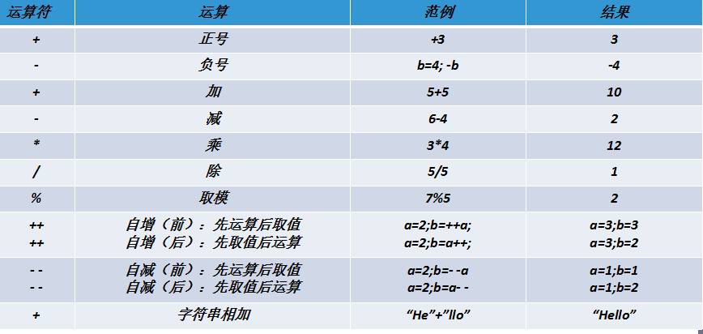
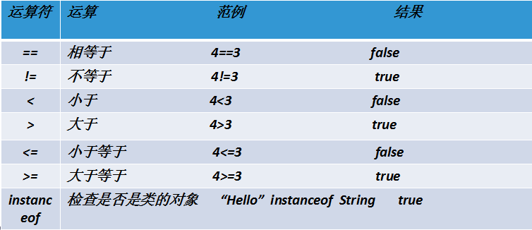
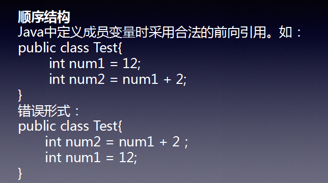
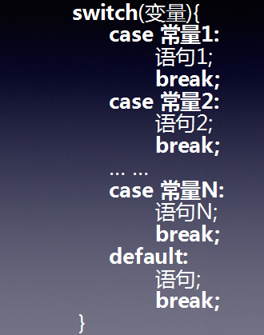
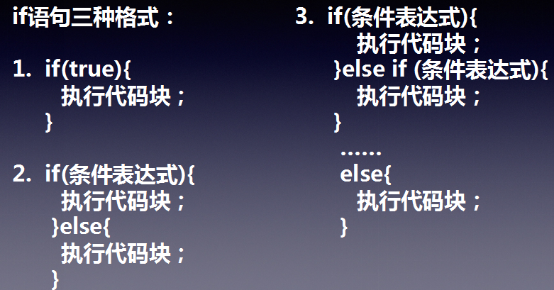
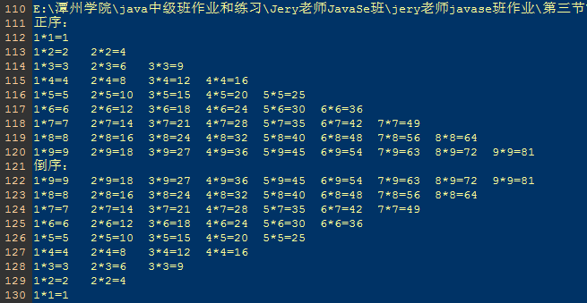

JavaSe基础第三节
Java运算符
- 运算符是一种特殊的符号，用以表示数据的运算、赋值和比较等。
-
1.算术运算符，如：
int a = 1;int b = 2;a + b -
2.赋值运算符，如：
int a = 1; -
3.比较运算符（关系运算符），如：
a > b;a >= b -
4.逻辑运算符，如：
if(a = 1 && b = 2)；if(a = 1 || b = 2) -
5.位运算符，如：
4 >> 2；4 << 2 -
6.三元运算符，如：
a = a == 2?2:3
一、算术运算符
-
除法的时候整数相除在除不尽的时候，想要获取小数结果，必须一方转成float类型。否则在计算的时候就会丢掉，造成精度丢失。(如文件上传)； 从jdk1.7以后数据类型是可以接受二进制了。0b或者0B的组合01的形式都是二进制；如：
int a = 0b10101
2
3
4
5
6
7
8
9
10
11
12
13
14
15
16
17
18
19
20
21
22
23
24
25
26
27
28
29
30
31
32
33
34
35
36
37
38
39
40
41
42
43
44
45
46
47
48
49
50
51
52
53
54
55
56
57
58
59
60
61
62
63
64
65
66
67
68
69
70
71
72
73
74
75
76/*
int a = 2;
int b = 10;
//用一个浮点型可接收一个整型
float c = a/b;
//a/(float)b只要有一个是浮点型除法后可得到浮点型的数
float d = a/(float)b;
//a/b属于整型
System.out.println(a/b);//输出0
System.out.println(c);//输出0.0
System.out.println(d);//输出0.2
int e = 1;
int f = 3;
float ff = (float)e/f;
System.out.println(e/f);//输出0
System.out.println(ff);//输出0.33333334*/
/*
//如果被除数（分子）是负数，那么结果是就负数，如果除数（分母）是负数，分子是整数，结果是正数。如果都是负数其结果就是负数
int a = -6;
int b = 4;
int c = 6;
int d = -4;
System.out.println(a%b);//-2
System.out.println(c%d);//2
System.out.println(a%d);//-2*/
/*
float a = 0.0f;
int b = 10;
int c = 2;
int e = 0;
float f = 2.0f;
//取模时分母为整型的零，会报错System.out.println(b%e);//报错：Exception in thread "main" java.lang.ArithmeticException:/ by zeroat Three.main(Three.java:31)
//被除数（分子）大于除数（分母）按正常运算进行取余
System.out.println(b%c);//输出0
//被除数（分子）小于除数时，取模得到的是被除数（分子）
System.out.println(c%b);//输出2
//除数（分母）为浮点型的零，取模得到NaN
System.out.println(b%a);//输出NaN（不是一个数字）//除数（分母）为浮点型的零，除法后得到Infinity
System.out.println(b/a);//输出Infinity（无穷大）
//除数（分母）为整型的零，除法会报错
System.out.println(b/e);//报错：Exception in thread "main" java.lang.ArithmeticException:/ by zeroat Three.main(Three.java:31)
//注意点2：1.0/0---Infinity无穷大，在除法运算中，如果有一方是浮点型或者两方都是浮点型，其计算结构一定浮点型。
如果除数是0或者0.0都得到结果就是：无穷大
System.out.println(f/e);//输出Infinity
*/
/*
int a = 3;
//后++，将a++看做一个整体，它是先将a赋值个b，然后此时内存中的a就变成了4
int b = a++;
//前++，它是先将a自己加1，此时内存中的a就变成了5，然后再赋值给b
int c = ++a;System.out.println(b);//输出3
System.out.println(c);//输出5
System.out.println(a);//输出5*/
/*
int a = 3;
int b = a++ + 2;//等同于b = 3 + 2，此时内存中的a变成了4
int c = ++a + b;//等同于c = 5 + 5，此时内存中的a变成了5
System.out.println(a+"===="+b+"===="+c);//输出5 5 10*/
/*
+号涉及String时，将其看做拼接符，按优先级进行运算拼接
*/
/*
String str = "hel";
String str1 = "low";
int a = 11;
int b = 12;
System.out.println(str+str1+a+b);//输出hellow1112
System.out.println(str+a+b+str1);//输出hel1112low
System.out.println(str+(a+b)+str1);//输出hel23low
System.out.println(a+b+str+str1);//输出23hellow*/
/*
short s = 3;
//s为低位节的整型，而2默认为int整型，低位节无法接收高位节的数据
s = s+2;
System.out.println(s);//错误:不兼容的类型:从int转换到short可能会有损失*/
二、赋值运算符
-
符号：= ，当“=”两侧数据类型不一致时，可以使用自动类型转换或使用强制类型转换原则进行处理。支持连续赋值。扩展赋值运算符： +=, -=, *=, /=, %=
1
2
3
4
5
6
7
8
9
10
11
12
13
14
15
16
17
18
19
20
21
22/*//int 可以来接收自动转成的int类型数据
int a = s+2;
System.out.println(a);//输出5
short b = 4;
//用+=、-=、*=、/=、%=这些赋值扩展符，进行运算，低位的b可以接收住的（系统内部已经进行强制转换了）
b+=4;//注意：与b = b+4是不同的
System.out.println(b);//输出8
int i = 1;
i+=0.1;
//i为整型，所以不是输出1.1
System.out.println(i);//输出1*/
/*int i = 1;
i *= 0.9;//i = 0
System.out.println(i);//输出0
i++;//内存中的i变成了1
System.out.println(i);//输出1*/
/*int a = 80;
if(a == 80){//注意：不能写成a = 80， 双等号是比较，单等号是赋值会报错：错误:不兼容的类型:int无法转换为boolean
System.out.println("你好");
}else{
System.out.println("你不好");
}*/
三、比较运算符（关系运算符）
- 比较运算符的结果都是boolean型，也就是要么是true，要么是false。
- 
四、逻辑运算符
- 逻辑运算符用于连接布尔型表达式，在Java中不可以写成3<x<6，应该写成x>3 & x<6 。
-
&”和“&&”的区别：
单&时，左边无论真假，右边都进行运算；
双&时，如果左边为真，右边参与运算，如果左边为假，那么右边不参与运算。
-
|”和“||”的区别同理，||表示：当左边为真，右边不参与运算。而|左边为真，右边还是会参与的
-
异或( ^ )与或( | )的不同之处是：当左右都为true时，结果为false。
1
2
3
4
5
6
7
8
9
10
11
12
13
14
15
16
17
18
19
20
21
22
23
24
25
26
27
28
29
30
31
32
33
34
35
36
37
38
39
40
41
42
43
44
45
46
47
48
49
50
51/*
int a = 100;
int b = 22;
//双&时，如果左边为真，右边参与运算，如果左边为假，那么右边不参与运算。
/*
if(a>100 && b>22){
System.out.println("进入了");
}else{
System.out.println("没进入");//没进入
}
*/
/*
if(a>100 & b>22){
System.out.println("进入了");
}else{
System.out.println("没进入");//没进入
}
*/
//单&时，左边无论真假，右边都进行运算；|和||的区别同理
/*
if(a>100 & (b/0)==1){//编译时没报错，执行时报错：Exception in thread "main" java.lang.ArithmeticException:/ by zero
System.out.println("进入了");
}else{
System.out.println("没进入");//没进入
}
*/
/*
int d = 10;
float f = 10.0f;
//当是不同基础数据类型进行比较时，只是比较值，不比较数据类型；如果是基础数据类型值比较==，值相等那么都是true,如果是封装数据类型都是false
if(d = f){
System.out.println("相等");//相等
}else{
System.out.println("不相等");
}
*/
/*
int a = 20;
int b = 30;
//boolean值 ^ boolean值，当^（异或）两边的布尔值相同时，整体为false，不同时，整体为true
if(a == 20 ^ b == 30){
System.out.println("进入了");
}else{
System.out.println("没进入");//没进入
}
if(a < 20 ^ b == 30){
System.out.println("进入了");//进入了
}else{
System.out.println("没进入");
}
*/
五、位运算符
- 注意了：&、|、^这些符号两边都为boolean值时，是属于逻辑运算符，两边为数字时，属于位运算符
-
参与位运算符的数字，一定要进行二进制的换算然后再运算
-
&表示按位与，两个同时为1返回1，其它都是0
-
|表示按位或，如果两个有一个1就是1，否则都是0
-
^表示按位异或，两个相同返回0，否则返回1
-
<<表示左移位（5<<3） >>表示右移位
-
~取反运算符，若n>0 ~n =-(n+1)
1
2
3
4
5
6/*
int a = 2;//0010
int b = 3;//0011
System.out.println(a & b);//输出2，0010 == 2
System.out.println(a | b);//输出3，0011 == 3
System.out.println(a ^ b);//输出3，0001 == 1*/
六、三元运算符
-
格式:
(条件表达式)? 表达式1：表达式2；
为true，运算后的结果是表达式1；
为false，运算后的结果是表达式2；
-
表达式1和表达式2为同种类型
三元运算符与if-else的联系与区别：
1）三元运算符可简化if-else语句
2）三元运算符要求必须返回一个结果。boolen
3）if后的代码块可有多个语句
程序流程控制
-
顺序结构：程序从上到下逐行地执行，中间没有任何判断和跳转。
 -
分支结构：根据条件，选择性地执行某段代码。有
if…else和switch两种分支语句。 -
switch(表达式)中表达式的返回值必须是下述几种类型之一：
byte，short，char，int，枚举，String； - case子句中的值必须是常量，且所有case子句中的值应是不同的；
- default子句是可任选的，当没有匹配的case时，执default
-
break语句用来在执行完一个case分支后使程序跳出switch语句块；如果没有break，程序会顺序执行到switch结尾
 1
2
3
4
5
6
7
8
9
10
11
12
13
14
15
16
17
18
19/*
int a = 4;
switch(a){
case 1://必须填的是一个常量
System.out.println("1");
break;//没有break会将后面的也一起打印出来，直到遇到break才会跳出来
case 3:
System.out.println("3");
break;
case 4:
System.out.println("4");
break;
case 5:
System.out.println("5");
break;
default://如果以上都不满足，就执行这句代码，这句代码可以不写
System.out.println("为其他数");
}
*/ -
循环结构：根据循环条件，重复性的执行某段代码。有
while、do…while、for三种循环语句。注：JDK1.5提供了foreach循环，方便的遍历集合、数组元素。 - 循环语句分类：for循环、while循环、do/while循环
- break只能用于switch语句和循环语句中。
- continue 只能用于循环语句中。
- 二者功能类似，但continue是终止本次循环，break是终止本层循环。
- 与break和continue不同的是，return直接结束整个方法，不管这个return处于多少层循环之内，并非专门用于结束循环的，它的功能是结束一个方法。当一个方法执行到一个return语句时，这个方法将被结束。
-
break、continue之后不能有其他的语句，因为程序永远不会执行其后的语句。
1
2
3
4
5
6
7
8
9
10
11
12
13
14
15
16
17
18
19
20
21
22
23
24
25
26
27
28
29
30
31
32
33/*
for循环的执行步骤：
1.初始化部分：int i = 0
2.循环条件部分：i < 10
3.循环体部分：System.out.println(i)
4.迭代部分：i++
*/
/*
for(int i = 0;i < 10;i++){//i为局部变量
if(i == 4){
break;//跳出循环
}
System.out.println(i);//0,1,2,3,
}
//System.out.println(i);//报错，这里的i属于局部变量*/
/*
for(int i = 0;i < 5;i++){
if(i == 3){
//return;//注意：return不是用来跳出循环的~而是用于方法中代码的调试和返回的
continue;//跳出当前次循环
}
System.out.println(i);//0,1,2,4
}
*/
/*
int a = 0;
while(a < 10){
a++;//放在这里：输出1,2,3,4,5,6,7,8,9,10
System.out.println(a);
//a++;//放在这里：输出0,1,2,3,4,5,6,7,8,9
}
*/
第三节课后作业
-
九九乘法表：
1
2
3
4
5
6
7
8
9
10
11
12
13
14
15
16
17
18
19
20public class Three
{
public static void main(String[] args){
//九九乘法表
System.out.println("正序：");
for(int i=1;i<=9;i++){
for(int j=1;j<=i;j++){
System.out.print(j+"*"+i+"="+(i*j)+"\t");
}
System.out.println("");
}
System.out.println("倒序：");
for(int i=9;i>=1;i--){
for(int j=1;j<=i;j++){
System.out.print(j+"*"+i+"="+(i*j)+"\t");
}
System.out.println("");
}
}
} - 结果如下： 
-
两个数字交换：
1
2
3
4
5
6
7
8
9
10
11
12
13
14
15
16
17
18
19
20public class Three
{
public static void main(String[] args){
//两个数字交换方法一：
int a = 10;
int b = 44;
int c;
c = a;//c = 10;
a = b;//a = 44;
b = c;//b = 10;
System.out.println(a+"==="+b+"==="+c);//结果：44===10===10
//两个数字交换方法二：
/*int a = 10;
int b = 44;
a = a + b;//a = 44 + 10 = 55
b = a - b;//b = 54 - 44 = 10
a = a - b;//a = 55 - 10 = 44
System.out.println(a+"==="+b);//结果：44===10*/
}
}